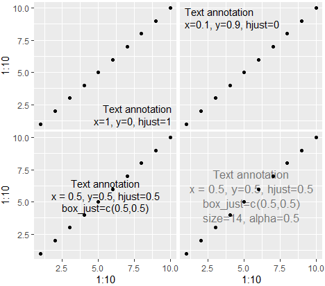
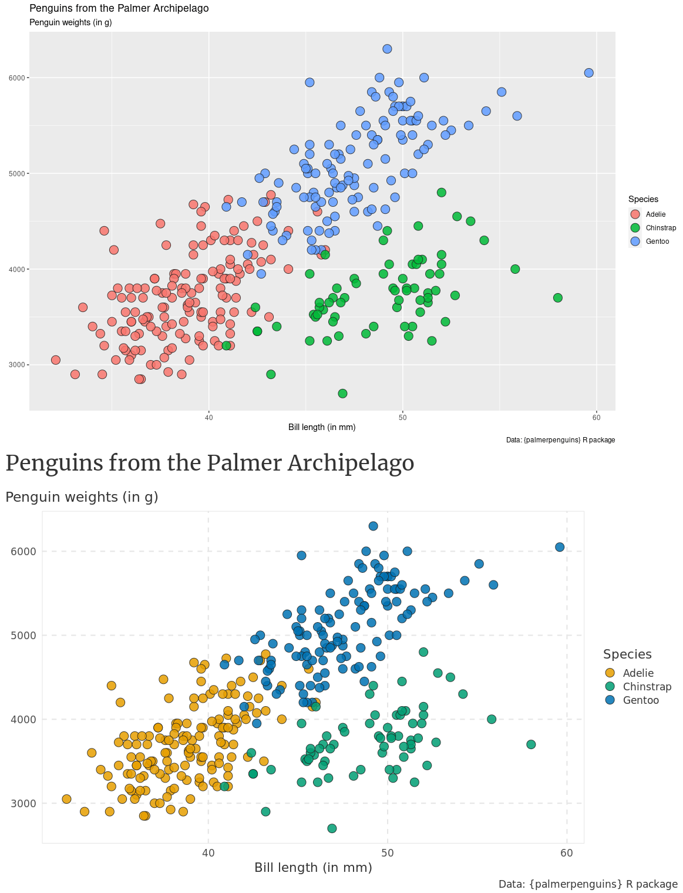

yodr (phonetically: “Yoda”) is a small R package with tools for epidemiology and hypothesis testing.
“Size matters not. Look at me. Judge me by my -log10 p-value, do you?”
Note: v1.0.0 was functionally identical to lukesRlib v0.2.13 but renamed to something 55% shorter yet 100% better. Follows the general *nix rule that if a command is >4 characters it’s not worth typing. Key functions are also renamed.
Icon by Google Gemini (Banana Nano)
Installation
To install the development version from GitHub use the remotes package:
remotes::install_github("lcpilling/yodr")Hypothesis testing
tidy()
tidy() runs broom::tidy() and returns the tidy estimates with CIs calculated as EST +/- 1.96*SE (i.e., the Wald method)
Motivation: by default the {broom} package uses confint() to estimate CIs. For GLMs this calculates CIs via the profile likelihood method. When using large datasets this takes a long time and does not meaningfully alter the CIs compared to calculating using 1.96*SE
tidy() does a few other nice things: hides the intercept by default, automatically detects logistic/CoxPH/CRR models and exponentiates the estimates, and if p==0 returns the ‘extreme p’ as a string. Other options include -log10 p-values.
Examples
fit_linear = glm(bmi ~ age + sex, data = d)
tidy(fit_linear)
#> Linear model (estimate=coefficient) :: N=449811 :: R2=0.0099
#> # A tibble: 2 x 8
#> term estimate std.error statistic p.value conf.low conf.high p.extreme
#> <chr> <dbl> <dbl> <dbl> <dbl> <dbl> <dbl> <chr>
#> 1 age 0.0196 0.000847 23.1 4.72e-118 0.0179 0.0212 NA
#> 2 sex 0.703 0.0137 51.4 0 0.676 0.729 9.39e-576Provided N and R^2 estimate. Calculated “extreme p” where p rounded to 0
library(survival)
fit_coxph = coxph(Surv(time, status) ~ age + sex + as.factor(smoking_status), data = d)
tidy(fit_coxph)
#> CoxPH model (estimate=Hazard Ratio) :: N=449811, Nevents=31025
#> # A tibble: 4 x 8
#> term estimate std.error statistic p.value conf.low conf.high
#> <chr> <dbl> <dbl> <dbl> <dbl> <dbl> <dbl>
#> 1 age 0.995 0.000837 -6.56 5.28e-11 0.993 0.996
#> 2 sex 1.04 0.0109 3.66 2.52e- 4 1.02 1.06
#> 3 smoking_status-1 1.04 0.0120 3.26 1.13e- 3 1.02 1.06
#> 4 smoking_status-2 1.03 0.0149 2.16 3.08e- 2 1.00 1.06 Automatically identified the input as from a coxph model and exponentiated estimate/CIs. Also provided N and Nevents. Also, tidied “as.factor()” variable names. If haven::as_factor() is used then any labels are shown correctly.
phewas()
phewas() (phonetically: “fee-was”) makes PheWAS in R easy and fast. It gets the tidy model output for categorical or continuous exposures, from linear, logistic, or CoxPH models. Output includes N and N cases, outcome, and model info. User can provide multiples exposures and outcomes.
Example: Categorical exposure in logistic regression
phewas(x="smoking_status", y="chd", z="+age", d=ukb, model="logistic", af=TRUE)
#> A tibble: 3 x 12
#> outcome exposure estimate std.error statistic p.value conf.low conf.high n n_cases model
#> <chr> <chr> <dbl> <dbl> <dbl> <dbl> <dbl> <dbl> <dbl> <dbl> <chr>
#> 1 chd smoking_status-Never NA NA NA NA NA NA 1073 146 logistic
#> 2 chd smoking_status-Former 1.24 0.126 1.72 0.0852 0.970 1.59 918 180 logistic
#> 3 chd smoking_status-Current 1.48 0.181 2.16 0.0311 1.04 2.11 285 52 logisticThe estimate is the Odds Ratio from a logistic regression model, and n and n_cases show the numbers for each category of the exposure (here af=TRUE i.e., treat as factor), including the reference group. Note that labels from haven::labelled() are shown correctly.
Example: Multiple exposures on single outcome (i.e., a “PheWAS”)
x_vars = c("bmi","ldl","sbp")
phewas(x=x_vars, y="chd", z="+age+sex", d=ukb, model="logistic")
#> # A tibble: 3 x 11
#> outcome exposure estimate std.error statistic p.value conf.low conf.high n n_cases model
#> <chr> <chr> <dbl> <dbl> <dbl> <dbl> <dbl> <dbl> <int> <int> <chr>
#> 1 chd bmi 1.08 0.0113 6.97 3.1e-12 1.06 1.11 4692 324 logistic
#> 2 chd ldl 0.980 0.0689 -0.300 7.6e- 1 0.856 1.12 4498 311 logistic
#> 3 chd sbp 1.01 0.00333 3.53 4.2e- 4 1.01 1.02 4561 316 logisticMultiple exposures and outcomes can be provided simultaneously. Here, the exposures are continuous.
Example: stratified analyses
res_all = ukb |>
phewas(x=x_vars, y="chd", z="+age+sex", model="logistic", note="All")
res_males = ukb |>
filter(sex=="Male") |>
phewas(x=x_vars, y="chd", z="+age", model="logistic", note="Males")
res_females = ukb |>
filter(sex=="Female") |>
phewas(x=x_vars, y="chd", z="+age", model="logistic", note="Females")
res = list_rbind(list(res_all, res_males, res_females))Data is first argument. phewas() can be on the right-side of other dplyr functions. Stratified models can be therefore easily performed. The note argument means output is labelled and can be combined into a single data frame easily.
Parallel processing
For systems with OpenMP or other similar configurations you may see good CPU usage as the underlying algebra/decomposiions etc can be multi-threaded. For systems limited to the reference BLAS you might just see one thread used (i.e., things will feel slow).
Fomr v1.1.0 you can set parallel=TRUE in phewas() to use the {parallely} package and run in parallel. Unless you are running with many exposures/outcomes you might not see an improvement if your system uses OpenMP etc.
Be aware that each child process (parallel worker) uses extra RAM as some data is copied to each node. In a standard RStudio DNAnexus instance with 16Gb RAM I find it is most efficient to set 2 or 3 child processes (then everything goes faster but doesn’t require big resources).
Data Transformation
carrec()
From Steve Miller’s package: carrec() (phonetically: “car-wreck”) is a port of car::recode() to avoid clashes in the {car} package. This offers STATA-like recoding features for R.
For example, if a variable of interest is on a 1-10 scale and you want to code values 6 and above to be 1, and code values of 1-5 to be 0, you would do:
Attributable Fraction
paf()
Computes the attributable fraction in the exposed (AFE) and the population attributable fraction (PAF) with 95% Confidence Intervals (95% CIs) for a binary exposure (coded 0/1) and either:
- a binary outcome (prevalence / risk) when
y_tis NULL, or - a time-to-event outcome (incidence) using a Cox proportional hazards model when
y_tis provided.
# Binary exposure
example_data$hypertension <- dplyr::if_else(example_data$sbp>=140, 1, 0)
# Binary outcome (prevalence / risk)
af <- paf(
d = example_data,
x = "hypertension",
y = "event"
)
cat(sprintf("PAF: %.2f%% (95%% CI: %.2f%% to %.2f%%)\n", af$paf_percent, af$paf_ci_lower_percent, af$paf_ci_upper_percent))
#> PAF: 13.75% (95% CI: 10.84% to 16.71%)
cat(sprintf("Excess cases in the exposued: %1.0f (95%% CI: %1.0f to %1.0f)\n", af$excess_cases_exposed, af$excess_cases_exposed_ci_lower, af$excess_cases_exposed_ci_upper))
#> Excess cases in the exposued: 203 (95% CI: 168 to 234)Working with test statistics
get_p_extreme()
Normally R will round numbers < 1*10-324 to zero. This function returns the “extreme p-value” as a string. Provide a z (or t) statistic
z = 50
get_p_extreme(z)
#> [1] "2.16e-545"get_p_neglog10()
Returns the -log10 p-value. Provide a z (or t) statistic
z = 50
get_p_neglog10(z)
#> [1] 544.6653get_p_neglog10_n()
Returns the -log10 p-value. Provide a z (or t) statistic and n (sample size)
z = 50
n = 100000
get_p_neglog10_n(z, n)
#> [1] 537.9851Genetic epidemiology
estimate_ld()
Function to estimate haplotype frequencies and LD statistics.
Genotype data in R is usually loaded as genotype counts of biallelic variants. Accurately estimating haplotype frequencies without phase information is challenging. The key ambiguity is for double heterozygotes (1/1): you can’t tell if the haplotypes are A1-B1/A2-B2 or A1-B2/A2-B1.
To estimate haplotype frequency without the underlying haplotype phase we can use the Expectation-Maximisation (EM) algorithm by Excoffier & Slatkin (1995). This function estimates the haplotype frequencies and returns the R^2 and D’ statistics.
Estimates highly similar to plink2 --r2-phased cols=+dprimeabs for several examples. This function is the combination of some of my older scripts plus input from Copilot.
# Estimate LD between HFE p.C282Y and HFE p.S65C
ukb |>
dplyr::select(rs1800562_g_a, rs1800730_a_t) |>
estimate_ld()
#> P_A1B1 P_A1B2 P_A2B1 P_A2B2 p_A1 p_A2 p_B1 p_B2 D D_max D_prime unsigned_D_prime R_squared em_iterations
#> 1 3.203526e-05 0.07335235 0.01563897 0.9109766 0.07338439 0.9266156 0.01567101 0.984329 -0.001117972 0.001150007 -0.9721434 0.9721434 0.001191575 110Plotting-related
annotate_textp()
Annotate a ggplot2 plot with text. Allows one to specify the relative position of the figure easily. Configurable margin, text and box justification. The added bonus in the following code is that you can specify which facet to annotate with something like facets=data.frame(cat1='blue', cat2='tall').
Function originally by Rosen Matev (from https://stackoverflow.com/questions/22488563/ggplot2-annotate-layer-position-in-r)
To get it aligned nicely in the middle, it may also require adjusting box_just depending on plot width etc. Other options include size and alpha
qplot(1:10,1:10) + annotate_textp('Text annotation\nx=1, y=0, hjust=1', x=1, y=0, hjust=1)
qplot(1:10,1:10) + annotate_textp('Text annotation\nx=0.1, y=0.9, hjust=0', x=0, y=1, hjust=0)
qplot(1:10,1:10) + annotate_textp('Text annotation\nx = 0.5, y=0.5, hjust=0.5\nbox_just=c(0.5,0.5)', x=0.5, y=0.5, hjust=0.5, box_just=c(0.5,0.5))
qplot(1:10,1:10) + annotate_textp('Text annotation\nx = 0.5, y=0.5, hjust=0.5\nbox_just=c(0.5,0.5)\nsize=14, alpha=0.5', x=0.5, y=0.5, hjust=0.5, box_just=c(0.5,0.5), size=13, alpha=0.5)
theme_minimal_modified()
Nice modification to ggplot’s theme_minimal by Albert Rapp (https://alberts-newsletter.beehiiv.com/p/ggplot-theme)
library(tidyverse)
penguins <- palmerpenguins::penguins |>
filter(!is.na(sex))
basic_plot <- penguins |>
ggplot(aes(x = bill_length_mm, y = body_mass_g, fill = species)) +
geom_point(shape = 21, size = 5, alpha = 0.85, color = 'grey10') +
labs(
x = 'Bill length (in mm)',
y = element_blank(),
fill = 'Species',
title = 'Penguins from the Palmer Archipelago',
subtitle = 'Penguin weights (in g)',
caption = 'Data: {palmerpenguins} R package'
)
basic_plot +
theme_minimal(base_size = 16, base_family = 'Source Sans Pro') +
scale_fill_manual(values = c('Adelie'= '#da2c38', 'Chinstrap'= '#FED18C', 'Gentoo'= '#30C5FF')) + # scale_fill_manual(values = thematic::okabe_ito(6)) +
theme_minimal_modified()